CF Toronto Eaton Centre: source analysis and fit to our map
The leasing plans are vector drawings with a real scale bar, unit outlines, unit numbers and square footage, so the mall can be rebuilt from measured geometry. The real building does not fit the block our map gives it: it is about 4.8 times too big at the map's street spacing. Three decisions below need your call before any building changes.
Checkpoint 3 · circulation
Escalators, the concourse and the subway link
Nine escalator banks, each an up/down pair, at the positions drawn on the plans: the Queen, centre and north courts and the Yonge & Dundas corner between Levels 1–2 and 2–3, and the escalator beside the Gap down to the concourse. The Urban Eatery concourse is built from its plan at the subway's ticket-hall level, and a tiled passage runs from its north edge to Dundas station's ticket hall.
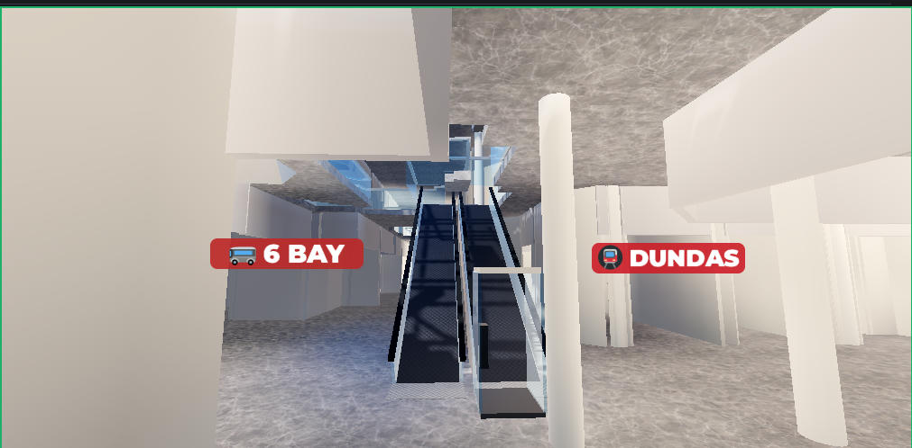
Centre court, Level 1: the pair up to Level 2
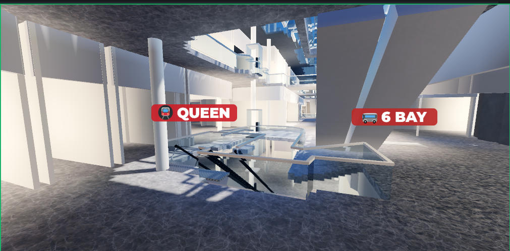
From Level 2, down through the opening
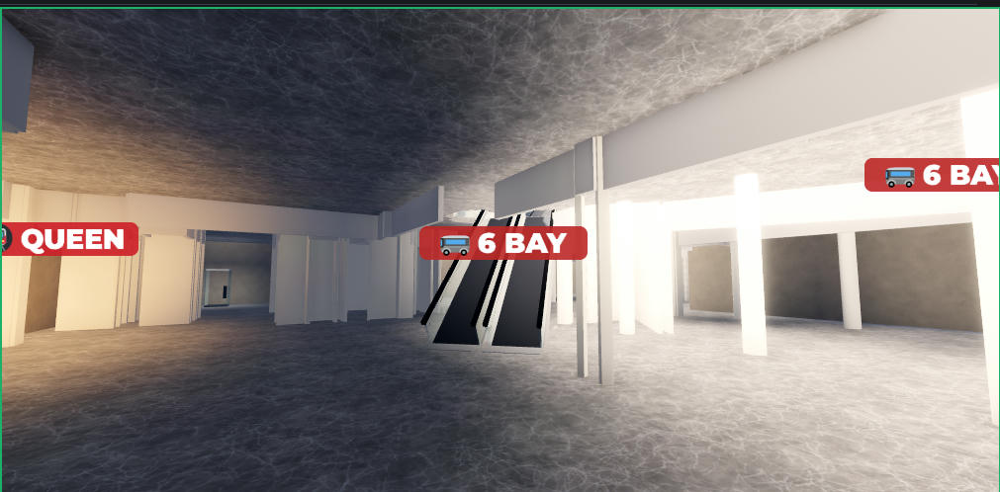
Concourse (Urban Eatery) and the escalator up to Level 1
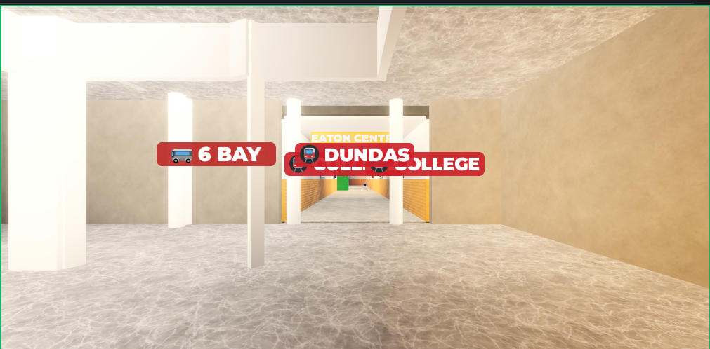
The passage from the concourse to Dundas station
Tested in Studio
Every escalator rides correctly both ways: a player placed at the foot of each "up" escalator is carried to the next floor, and each "down" one brings them back (18 of 18 rides).
New startup check: walking from the Eaton Centre concourse to the Dundas platform succeeds; all the existing station checks still pass.
The passage opens its own doorway into Dundas station's ticket hall, before the fare gates (Dundas's west entrance comes in from the north, so there was no passage to join).
How the escalators are placed
Position and direction: the escalator outlines on the plans (pairs of parallel handrail lines inside each floor opening), listed with their source in Data/Circulation.lua.
The top end is the drawn end that leads on to corridor on the upper floor. Our storeys are twice the plan's height, so each run is extended back across the lower floor to keep a 35° slope.
On the plans each escalator is its own outlined shape, which the trace had counted as floor; the upper floor is now cut open over each escalator, with balustrades along the cut, and walls and columns are kept out of its path.
Not done yet
Stairs aren't built (escalators and lifts cover every floor).
The concourse plan only covers the north half, so there's no concourse under the Queen end and no link to Queen station yet.
Storefronts, finishes, lighting and signage come next.
Checkpoint 2 · the shell, built from the plans
In game now
The old stand-in mall is gone. Levels 1–3 are built from the traced plans at 0.5 studs per foot, 20 studs a level: floors with the real openings, exterior walls with entrances only where the plans put entrance arrows, unit walls and storefront lines, glass balustrades, columns, the roof, and a glass barrel vault over the galleria skylight traced on the roof plan. Tested in Studio: the world builds with no errors and the station checks still pass.
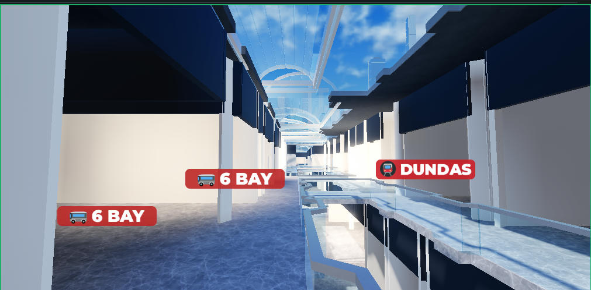
Level 3 galleria under the vault, balconies and openings down
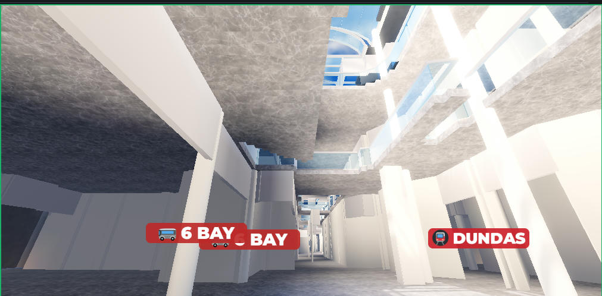
From Level 1: the openings stack up through every floor to the glass
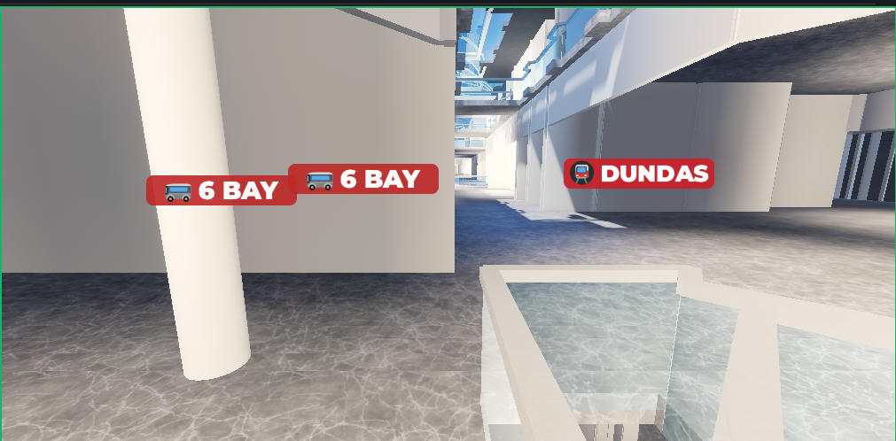
Queen court from Level 2
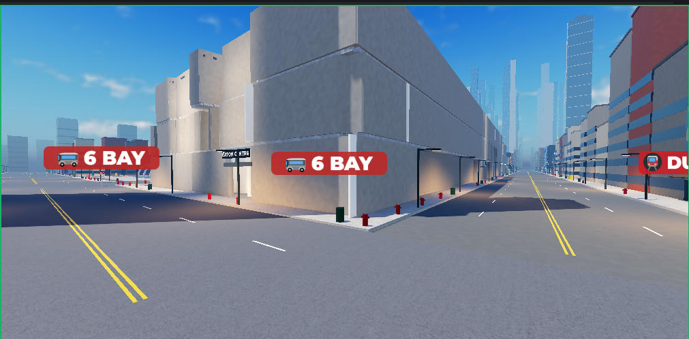
Queen & Yonge corner, Queen St entrance
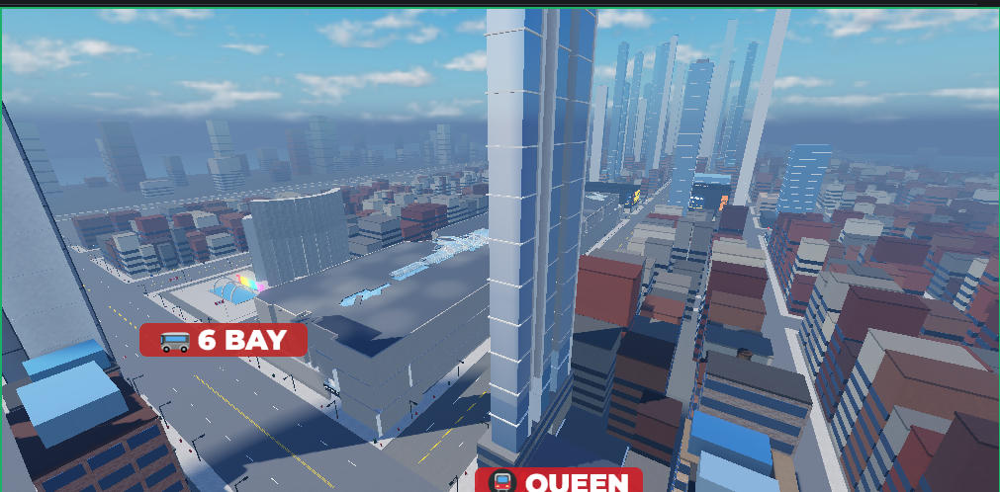
From the air, Queen St in front
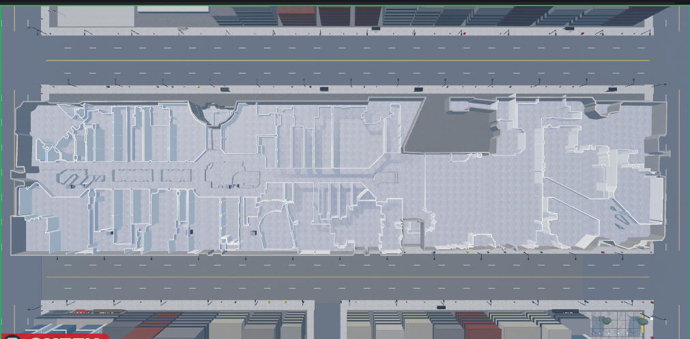
Level 3 from above (roof hidden) · compare with the Level 3 trace below
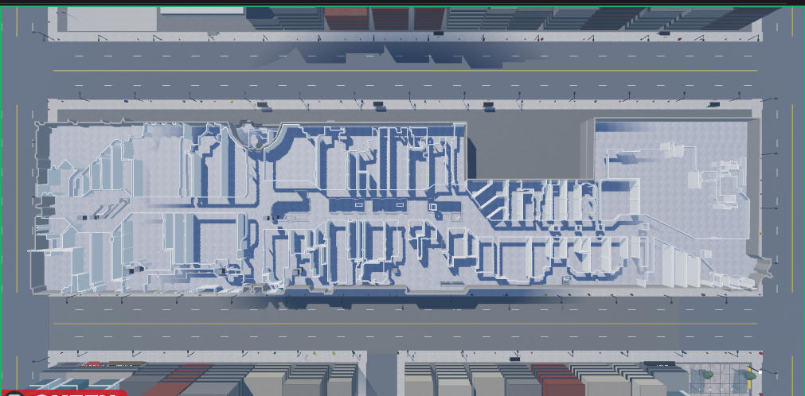
Level 2 from above
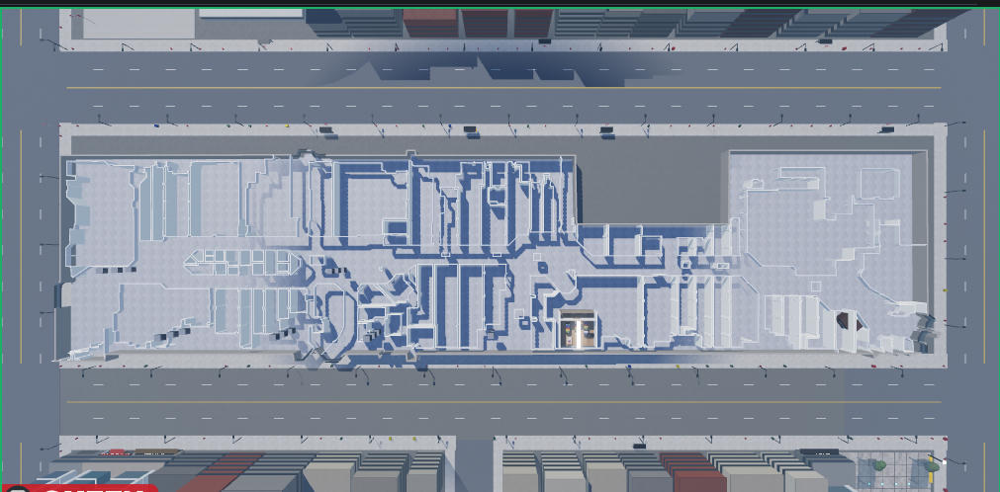
Level 1 from above
Fixed during testing
The Yonge facade was missing: it sits about 4 ft east of the line the data was clipped at. The clip now has a margin.
Over 1,000 ft of the Yonge wall had become "entrances" because a strip of common area runs inside it. Entrances now come only from the plans' entrance arrows (Queen St, Yonge by the subway, James St tunnel, Yonge & Dundas), at least 16 ft wide.
Floating facade panels at Queen & Yonge, where the plan draws kiosks out on the sidewalk: exterior walls now follow the footprint as clipped to the block.
The vault grew tall drums where the skylight widens; it now keeps one rise like the real galleria, with flat framed glass where the skylight turns diagonally at the Dundas end.
Not done yet
Escalators and stairs (6 working lift shafts are the only way up for now) and the concourse with its subway links.
Storefront glass, sign bands, finishes (ceilings still show the floor texture underneath), lighting and signage.
Grind Coffee now sits in unit D106 at the Dundas corner and Metro Threads in N132A; both work as before.
The transit name tags (bus stop, station pills) show through the mall; they should hide indoors.
Checkpoint 1 · block grown, plans extracted
What's done
Downtown block grown
Dundas St and everything north moved 490 studs; Queen St and south unchanged
Eaton block now 166 × 695 studs (James St to Yonge, Queen to Dundas)
Bay St moved to x −161; Shuter St re-placed halfway between Queen and Dundas
Studio test: the world builds fully, all 32 station path checks pass, trains and cars running, minimap updated
Plans turned into data
Repeatable tool: tools/eaton/extract.py
Every unit traced from its own label and checked against its printed square footage
Corridors from the plans' common-area fills; atrium voids and escalator wells detected
Level 1 is tied to the Queen, Yonge and James walls; every other level is registered to Level 1 by its structural column grid
Level
Registration
Large units (≥1,500 sq ft) within 10% / 25%
Small units within 25%
Traced vs printed area
Concourse
29 of 194 columns + escalator lands under L1 escalator
3 / 3 of 3
21 of 22
28,815 / 30,984 (93%)
Level 1
street walls
32 / 38 of 42
30 of 45
232,440 / 248,714 (93%)
Level 2
256 of 363 columns
35 / 43 of 46
24 of 29
220,822 / 231,213 (96%)
Level 3
206 of 326 columns
29 / 34 of 36
12 of 13
249,906 / 262,717 (95%)
Storage rooms on the concourse are left out of these counts. Wrong column offsets match only 10–60 columns, so the grid registration is unambiguous; it also confirms each sheet's own scale bar (a 1% scale change drops the match from 256 to about 60).
Discrepancies fixed
Level 3 "3% wider": not a drawing error. The Yonge facade steps out about 9 ft along the Queen half, and Levels 1–2 had been measured from the inner wall. With column-grid registration every level now measures 318 ft James–Yonge.
H&M on Level 1: the label shared a text line with Jugo Juice's unit number; labels are now split piece by piece. H&M traces within 1.5%.
Small units and kiosks: each label now starts from the nearby region that best fits its printed size, labels that point at their unit with a leader line are followed (Swatch, Sunglass Hut, Geox, Gemlet and others), and 10 corridor kiosks with no outline on the plan are placed at their label as a square of their printed area, marked inferred.
Lifts, stairs, escalators: extracted. Lifts come from the plans' lift symbol (public lifts: concourse 3, L1 6, L2 11, L3 13, including the glass lifts at the Queen and centre courts). Escalators are found where the plan draws treads inside a floor opening or marks UP/DN (Queen court on L2 and L3, the Yonge St escalator hall, James St). Escalators drawn only as outlines will be read off each opening by eye during the circulation build and flagged as such.
Traced areas run a little under printed areas because leasing areas are measured to wall centrelines and storefront faces, while the trace stops at the inside of the drawn lines.
Level 3 · pink openings are the galleria voids and escalator wells
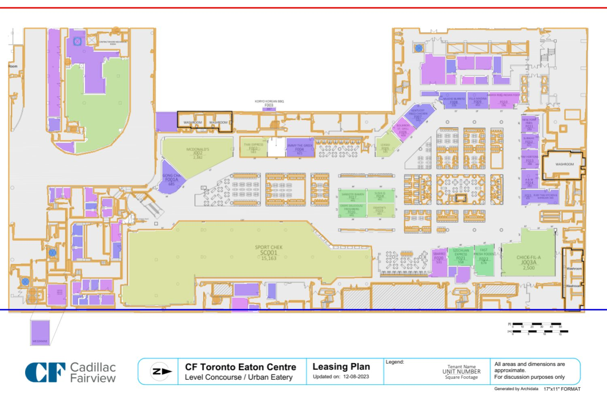
Concourse (Urban Eatery)
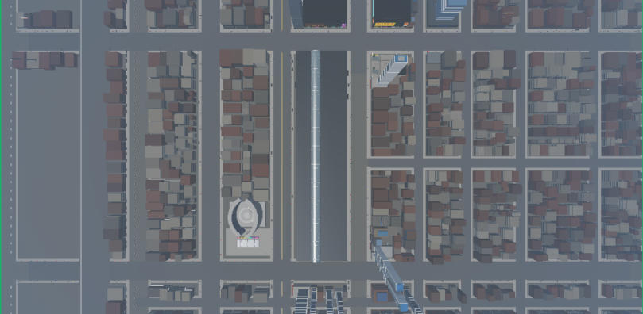
In game: the stretched block, Queen at the bottom, Dundas at the top
Still open
10 of about 300 units have no traceable outline (mostly Dundas-corner kiosks and a few leader-line labels whose line ends in a corridor). They'll be placed by hand from the plan when storefronts go in.
About a third of small Level 1 units are more than 25% off, usually because fixture lines split them. Their storefront positions along the corridor are still right; interiors will be fitted to the unit.
Escalators drawn only as outlines still need reading off their openings.
Decisions · approved
Agreed before construction
Scale and block size. Recommended: build the mall at 0.5 studs per foot (2× smaller than human scale across the floor plan, full human scale vertically) and lengthen the Queen–Dundas block by about 490 studs, moving Dundas Street and everything north of it. The Queen & Yonge corner stays where it is.
Store names. Recommended: keep every real unit number, footprint and category, but show original, made-up store names in game. Real brand names and logos are other companies' trademarks and can get a Roblox experience moderated. The registry still records the real tenant for reference.
Upper anchors. Recommended: build Concourse, Level 1, 2 and 3 fully; show Level 2B, 4 and 5 (department-store upper floors, offices, parking) as exterior and closed space only.
Phase 1 · Source material
What the PDFs contain
Both files are 17×11 in sheets drawn with north to the right: Queen Street on the left, Dundas Street West on the right, James Street at the top, Yonge Street at the bottom. Every wall, unit boundary and fixture is a vector line, not a scanned image.
Sheet
Level
Scale (measured)
What it gives us
Leasing p1
Concourse / Urban Eatery
1.915 pt/ft
Food court only: 22 stalls with frontage dimensions, seating layout, Sport Chek, McDonald's, Chick-fil-A, three washroom blocks, escalators. Drawn about 2.7× larger than the other sheets.
Leasing p2
Level 1
0.700 pt/ft
Full footprint Queen to Dundas, ~130 unit labels with square footage, corridor widths (20–41 ft), every street entrance, subway arrows, tunnel to Bell Trinity Square.
Leasing p3–4
Level 2
0.700 pt/ft
Units, balconies around the open galleria, bridge across Queen to the Hudson's Bay building, James Street doors.
Leasing p5
Level 2B
—
Small Yonge-side mezzanine (Roots, two vacant units) and the 250 Yonge link.
Leasing p6
Level 3
0.680 pt/ft
Upper units, the open voids with escalator banks between the two corridors, the round court near Michael Kors, the former Nordstrom block (Y002A) at Dundas.
Leasing p7–8
Level 4, 5
—
Mostly void, offices and parking. The Level 5 sheet labels the galleria void at roof level: 50,786 sq ft.
floorplan.pdf
Concourse, L1–L4
dims in feet
Older directory-style plans with hundreds of written dimensions (store widths, corridor widths, the 132 ft Sport Chek frontage). Used to cross-check the leasing plans.
Measured means read from the drawing's own scale bar or written dimensions, accurate to about ±2%. Inferred means estimated where the plans say nothing.
Architectural reading
Feature
Value
Source
Length, Queen St wall to Dundas St W face
≈ 1,390 ft (424 m)
measured L1 scale bar
Width, James St wall to Yonge St wall
≈ 330 ft (101 m)
measured L1 scale bar
Galleria (glass-vault void) footprint
50,786 sq ft
measured L5 void label
Main corridor widths
26–41 ft
measured written dimensions, L1–L3
Retail units
≈ 300 across 4 levels, 100–34,000 sq ft
measured unit labels
Floor-to-floor height
≈ 20 ft per level
inferred plans are 2D; from photos and typical malls
Vault profile and roof height
barrel vault over L3
inferred no section drawings
How the sheets line up
shared James, Yonge and Queen walls
inferred each level is its own sheet; walls give a common reference
Concourse
Urban Eatery food court below the north half, with seating islands and a ring of stalls
Sport Chek (15,163 sq ft), McDonald's, Chick-fil-A, Gong Cha
Links to Dundas station (north) and Queen station (south)
Only the food-court part is drawn; the south concourse is missing
Level 1 (street)
Two parallel corridors joined around central courts, not one straight hall
Entrances: Queen St, three on Yonge, Yonge & Dundas corner (H&M), Dundas St W, Trinity Square tunnel
Anchors: Queen's Cross Food Hall (old Richtree, FA100), Gap, Old Navy/Winners, Shoppers, Adidas
Subway stairs at the Queen end and mid-Yonge
Level 2
Balconies on both sides of the galleria void
Bridge across Queen St to the Hudson's Bay building
Voids with escalator banks between the two corridors
Round court at the centre (by Michael Kors), bridge toward Yonge
Zara, Uniqlo, Indigo, Harry Rosen, Sephora, Lululemon
Former Nordstrom block at Dundas, now Simons, Nike and Eataly
Phase 6 preview · Tenants
Current directory vs the plans
The official directory lists 252 current stores, each with its unit number. 196 match a unit on the leasing plans directly (L1 74, L2 62, L3 32, Concourse 25, other 3). The other 56 are newer subdivisions of units on the plans: the 16 Queen's Cross Food Hall stalls inside FA100, Nike / Eataly / Simons inside the old Nordstrom space, seasonal kiosks, and renumbered units. Hudson's Bay and Saks appear on the plans but closed in 2025, so their building would be shown as a closed anchor.
Phase 2 · Existing map audit
What our map has today
Item
In our map
Origin and orientation
Union Station at z = −1000 on the harbour, north is −Z, Yonge St straight along x = 100
Scale
People, streets and buildings at about 0.3 m per stud; distances between places compressed downtown to 700 studs per real km
Queen St / Dundas St
z = −1616 / z = −1911 (295 studs apart)
Eaton Centre block
x −88…57, z −1866…−1661 (145 × 205 studs)
Current mall
3 levels 18 studs apart, one straight 30-stud galleria with a glass barrel vault, L2/L3 bridges, food court on L1 at the Dundas end, Grind Coffee and Metro Threads workplaces, lifts at the Queen end
Neighbours
Sankofa Square SE of Yonge & Dundas, Shuter St (east side only) at z −1760, Bay St at x −131, City Hall square NW of Queen & Bay, billboard buildings at Yonge & Dundas
Subway
Queen and Dundas stations under Yonge; ticket concourse at y −17, platforms at y −36. The real Eaton Centre's concourse level lines up naturally with our station concourse.
How positions are set
Almost everything reads from TorontoLayout.lua; only about 11 numbers elsewhere would need checking if the block grows
The scale problem
At our street spacing, the 424 m mall would have to fit 205 studs. That is 0.15 studs per foot: a 20 ft storefront would be 3 studs wide, narrower than a player. The current mall works only because it is a simplified stand-in. Any faithful version needs a bigger block.
Option
Footprint (studs)
20 ft shop / 40 ft corridor
Block change
Verdict
A · fit current block
49 × 205
3 / 6 studs
none
Not walkable; can't be faithful
B · 0.5 stud/ft
166 × 695
10 / 20 studs
Dundas and everything north +490 studs; Bay St ~25 studs west
recommended
C · 0.65 stud/ft
216 × 904
13 / 26 studs
+700 studs north; Bay St ~75 studs west
Roomier, longer walks, bigger shift
D · full human scale
332 × 1,391
20 / 40 studs
+1,190 studs north; Bay St pushed into City Hall
Most accurate, but dwarfs the rest of downtown
Why B: players are about 2 studs wide and 5 tall, so 10-stud shopfronts and 13–20-stud corridors feel generous; heights stay at full scale (about 20 studs per level), so the galleria rises roughly 80 studs to the vault and feels enormous. The subway between Queen and Dundas gets about 490 studs longer, roughly 10 seconds of extra ride, and the station path checks and minimap rebuild automatically from the layout data. Proportions stay exactly those of the plans because the whole floor plan is scaled by one factor.
Alignment to the streets
Plan right (north) maps to world −Z; plan down (Yonge) maps to world +X. One rigid transform per level, anchored at the Queen & Yonge corner.
The Yonge facade sits on the existing Yonge sidewalk; Queen facade on Queen; the Dundas end faces Sankofa Square across Yonge, as it does in reality.
James Street becomes a real lane along the west side, with the Trinity Square tunnel and James St doors opening onto it.
The concourse floor sits at the station concourse height (y −17), so Queen and Dundas stations connect through level passages, no stairs needed.
The block growth is applied as one offset in TorontoLayout.lua. I'll list every moved item and re-run the station path checks before touching the mall.
Missing or uncertain information
South concourse. The concourse sheets only cover the Urban Eatery. I'd infer the rest from the Level 1 structure and the station positions. If you have a full concourse plan or directory map, it would replace that guess.
Heights and the vault shape. No sections or elevations. I'd use about 20 studs per level and a barrel vault matched to the galleria width, refined from photos.
Exterior facades. Not in the plans. I'd keep the current exterior style and rebuild it to the new footprint.
Art installations. The geese sculpture in the galleria is a copyrighted artwork. I'd leave it out or use a generic hanging installation.
Phases 3–10 · Build plan
Construction sequence, with a check at each step
Extract the plans into data
A script turns the PDF vectors into per-level geometry: walls, unit outlines with unit number and square footage, voids, escalators, lifts, stairs, entrances. Each unit's traced area is checked against its labelled square footage, and anything more than 10% off is flagged. You get a top-down image of each level to compare with the PDFs.
Grow the block
Apply the layout offset, rebuild, re-run every station path check, confirm the minimap, the subway and cars.
Shell and galleria
Footprint, floor plates with real void openings, columns, glass barrel vault, balcony edges and railings. Top-down comparison per level.
Corridors and vertical connections
Corridor geometry from the plans, working escalators (moving treads players ride), lifts using the existing elevator system, stairs, bridges, the Queen St bridge, subway links.
Unit footprints and storefronts
Every unit at its real outline. One storefront module sized to each frontage: glazing, sign band, display window, door.
Materials, lighting, signage, furniture
Polished stone, brushed steel, glass, ceiling panels; recessed and storefront lighting; one signage family for directories, washrooms, lifts, exits and subway.
Interiors and tenants
Reusable interior templates per category (clothing, electronics, beauty, restaurant, food stall, department store) filled from the tenant registry. Grind Coffee and Metro Threads move into proper units with their job stations intact.
Interactions, performance, validation
Interactive directories, doors, seating, washrooms. Part budget for the whole mall (target under 25,000 parts) with streaming. Final top-down comparison to the PDFs and a full walkthrough: street → corridors → floors → atrium → stores → concourse → subway.
Code lives in a new World/EatonCentre/ module folder (data per level, shell, galleria, units, storefronts, circulation, interiors) and a shared tenant registry. In game it builds into EatonCentre / Exterior, Level_Concourse, Level_01–03, Vertical_Connections, Signage, Lighting, Interactive_Objects.